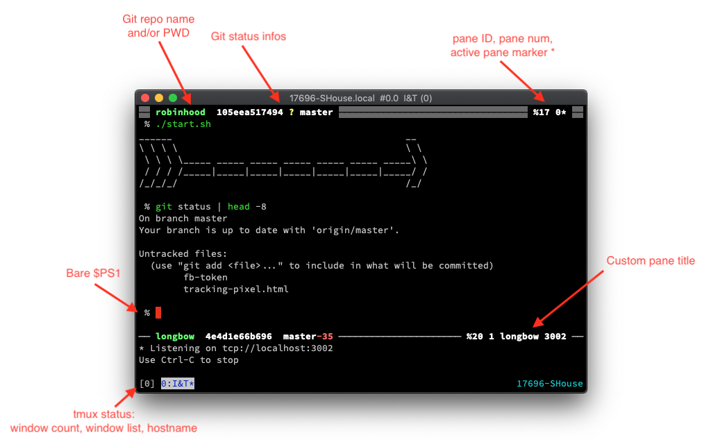

Home | Posts by category
2019-10
tmux Status Line
This is an experiment to move $PWD and Git info from my shell prompt into tmux pane titles. I’m just trying this on for size for now but it looks pretty:
https://github.com/whiteinge/dotfiles/commit/984ee79371a4

Pros:
- It reduces a bit of CLI clutter and gives a single, stable place to look for certain info.
- You can see infos even when running full-screen CLI programs.
Cons:
- You lose a bit of contextual info when scrolling through the scrollback since you can’t see the current directory or current Git hash next to the command you typed. In practice I haven’t really missed it so far.
- Tmux does not wait for external commands to finish before drawing the UI so in order to view changes in near real-time this requires a fair bit of Zsh machinery to manually tell tmux to refresh after changing directories or running Git commands.